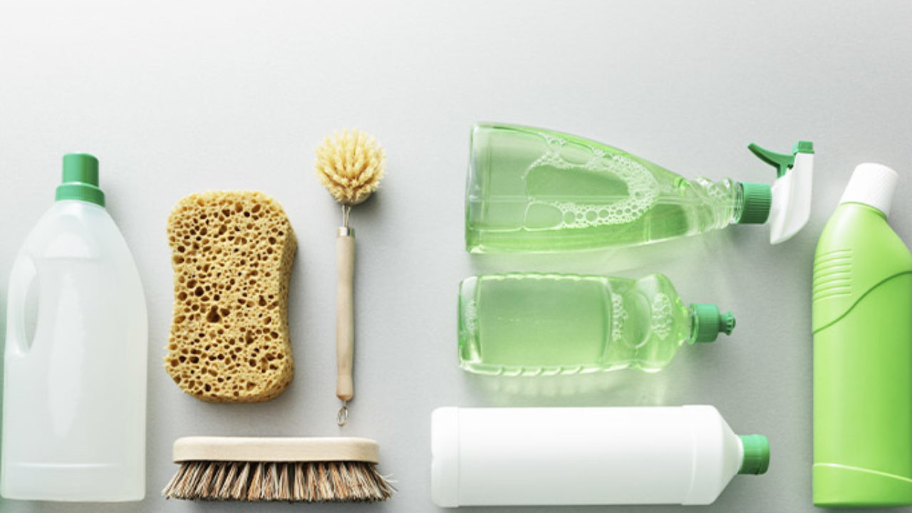

Limpiadores ecológicos
Ahora hay una gran variedad de limpiadores basados en elementos biodegradables, como el bicarbonato de sodio o el vinagre. Además, el agua que utilizas para limpiar con estos productos, la puedes reutilizar para regar el pasto, ya que no tendrá contenido tóxico que dañe tus plantas o mascotas.